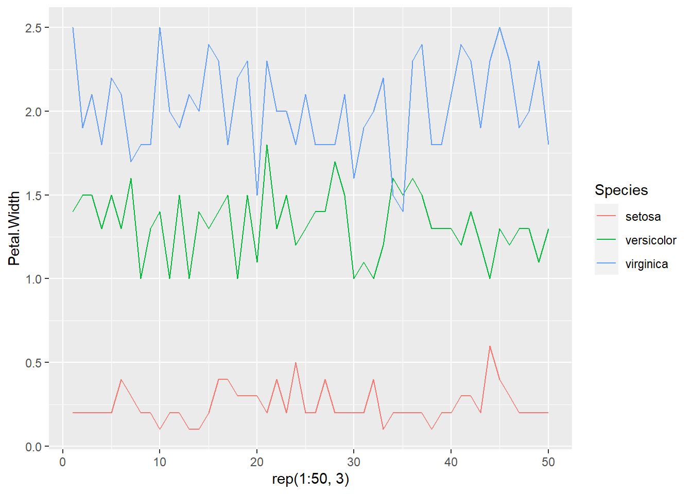

library(ggplot2)- LEMA: INTENTA, INSISTE Y RESISTE
- DESARROLLADA POR: DIANA MARÍA TORO LÓPEZ
- CURSO: R-STUDIO GRATIS
- INSTRUCTOR: RAFA GONZALEZ GOUVEIA
- ENTIDAD: youtube.com/@GonzalezGouveia
T2V7 - geometrías geom_point, geom_smooth, geom_line, geom_boxplot y geom_jitter. Veremos como superponer o sumar distintas geometrías para obtener gráficas más interesantes!
Bargar la librería
Datos iris, flores utilizadas en machine learning
data("iris")Primeras filas de los datos
head(iris) Sepal.Length Sepal.Width Petal.Length Petal.Width Species
1 5.1 3.5 1.4 0.2 setosa
2 4.9 3.0 1.4 0.2 setosa
3 4.7 3.2 1.3 0.2 setosa
4 4.6 3.1 1.5 0.2 setosa
5 5.0 3.6 1.4 0.2 setosa
6 5.4 3.9 1.7 0.4 setosaEjemplo 1: puntos y líneas
ggplot(data = iris,
mapping = aes(x = Sepal.Length,
y = Sepal.Width,
# Variable con los tres tipos de flores
color = Species))+
geom_point() +
# Linea que pase por encima de los puntos y describa una tendencia mas o menos lineal, para usar lineas rectas debemos usar method = "lm"
geom_smooth(method = 'lm')`geom_smooth()` using formula = 'y ~ x'
Ejemplo 1: varias líneas
una línea
# vamos a escoger el subconjunto de todas las flores que tengan especie igual a setosa, colocamos una coma antes de cerrar el corchete para que nos selecciones solamente esos datos
ggplot(data = iris[iris$Species == 'setosa',],
# elementos estéticos, como queremos ver el compportamiento por variable, esto significa un vector que va de 1 a 50
mapping = aes(x = 1:50,
y = Petal.Width))+
# para hacer las lineas, debemos agregar la geometría de geom_line()
geom_line()# Al ejecurtar, vemos el comportamiento de las lineas a lo largo de los 50 datos que conforman la variable iiris$Species con el Petal.Width para la variable setosatodas las líneas para las 3 variables
ggplot(data = iris,
# elementos estéticos, como queremos ver el compportamiento por variable, esto significa un vector que va de 1 a 50, solicitamos que lo haga 3 veces con rep(1:50,3)
mapping = aes(x = rep(1:50, 3),
y = Petal.Width,
color = Species))+
# para hacer las lineas, debemos agregar la geometría de geom_line()
geom_line()
# Al ejecurtar, vemos el comportamiento de las lineas a lo largo de los 50 datos que conforman cada variable
# este tipo de gráfico es muy util cuando vamos a trabajar con series de tiempo, a lo largo de la semana o mes, y quieres ver el comportamiento de una variable como el precio o la temperatura etc a traves del tiempo para distintas categorías, sean ciudades, productos etc boxplot con puntos
# un gráfico o diagrama de cajas es un tipo de una gráfica que sirve para estudiar la distribución de una variable con respecto a distintas categorías
# vamos a estudiar la distribucion de ese ancho con respecto a cada una de las 3 variables
ggplot(data = iris,
mapping = aes(x = Species,
y = Petal.Width,
# relleno para pintar de color diferente las distintas especies
fill = Species)) +
# para hacer el boxplot, agregamos una geometría con este mismo nombre
geom_boxplot() +
# esta geometria me va a colocar dentro de las cajas los puntos del ancho de los pétalos, lo que nos ayuda a entender la mediana
geom_jitter()# Lo anterior nos indica que con la suma de comandos podemos hacer gráficas e ir superponiendo puntos y gráficas de cajas en la misma
# si queremos interpretar este gráfico, nos diría que la Setosa, tiene los gráficos más pequeños, mientras que la virginica tiene los datos más grandes, la línea significa la mediana, es decir que de la línea para arriba, está la mitad de todos los datos y de ella para abajo, la otra mitad, dentro de la caja estarian todos los datos y la línea vertical sería, el rango de lo más o menos normal que esperaríamos encontrar, todos los puntos fuera de esta línea, pueden ser considerados outlayers, ejemplo en el casoo de la Setosa